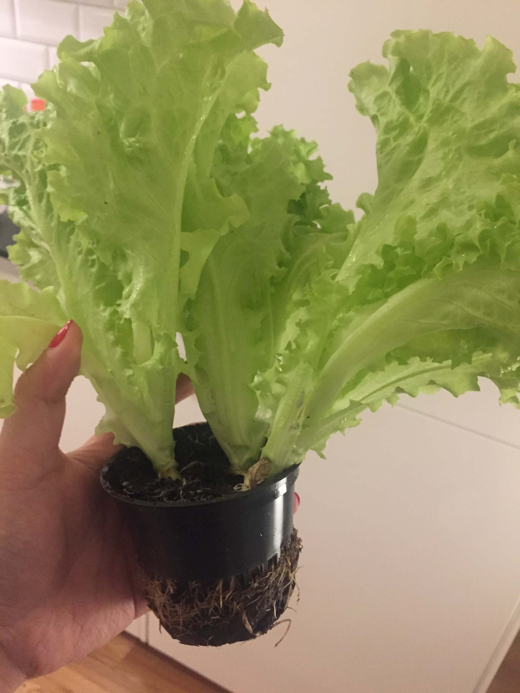
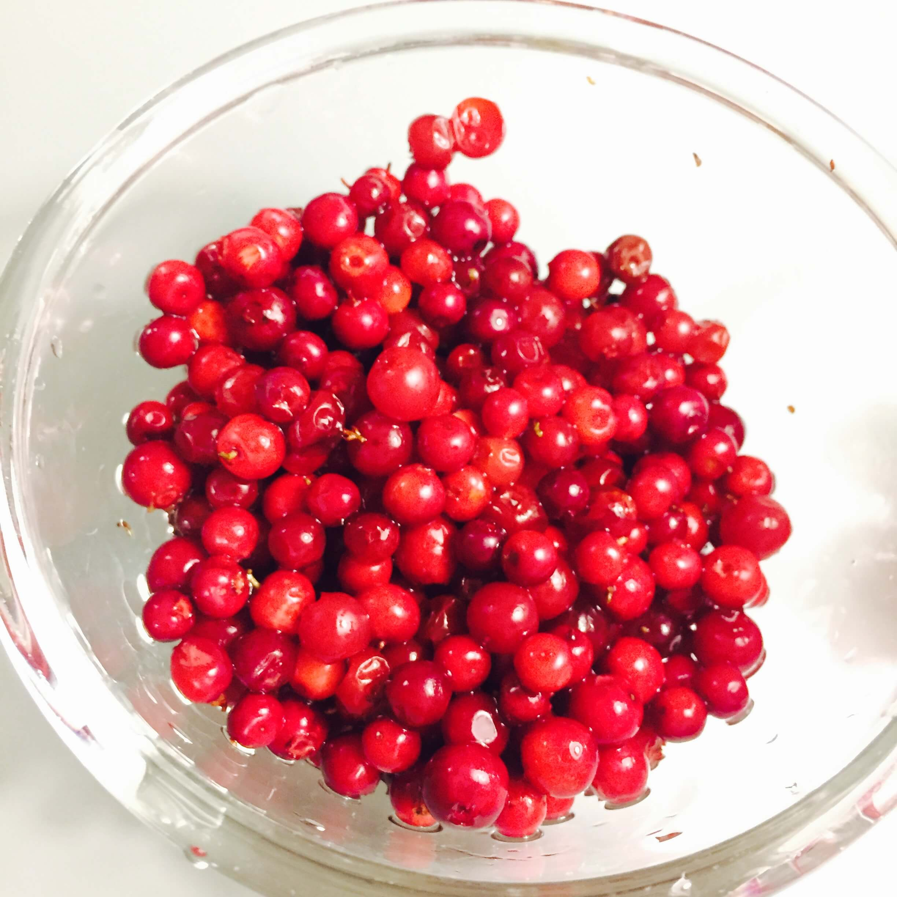
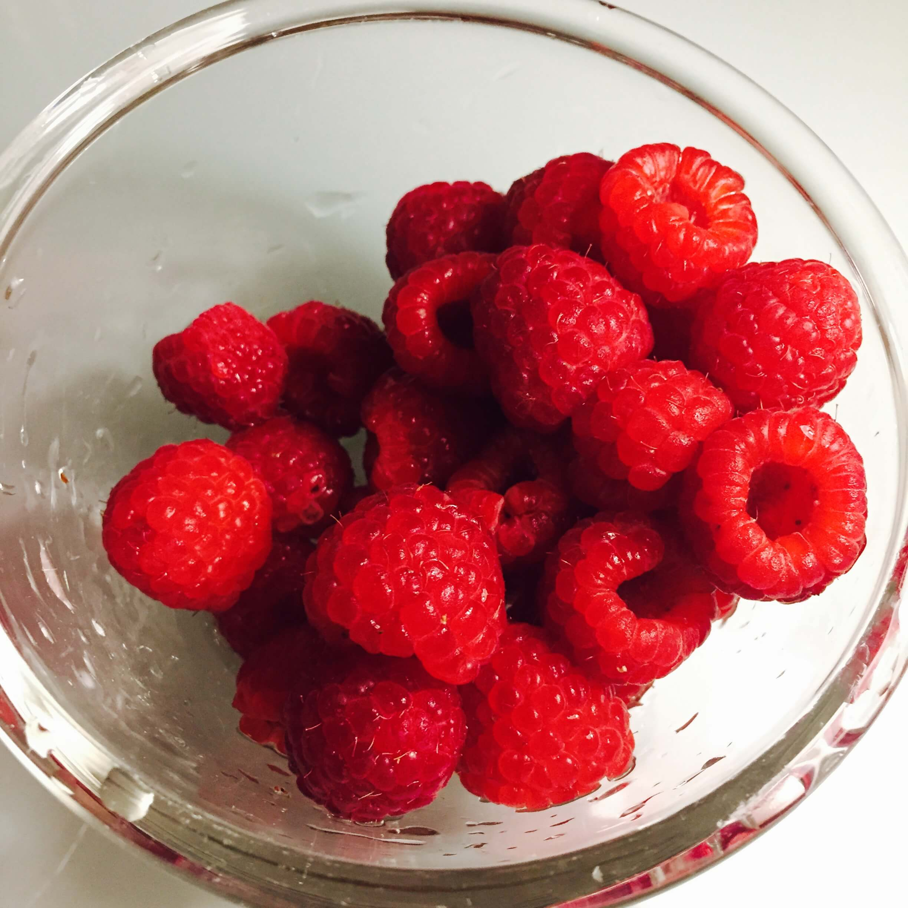
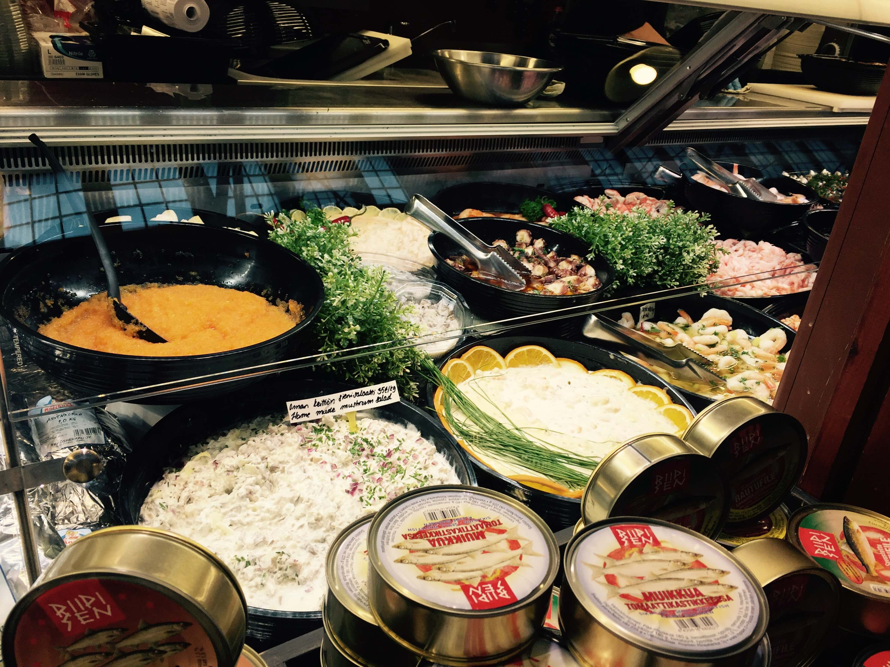

逛超市
每到一个地方，都特别喜欢去逛超市。从超市的货架上可以更多的了解本地人的生活状态和衣食住行，也可以发现一些特别的小惊喜。
芬兰的超市很多，分布也很密集，包括Rioski、K-Market、S-Market，上至大型的Supermarket，下至小型的便利店可以说是每一个街区俯仰皆是。超市的氛围很安静，大家都不会高声说话，甚至几乎不会交谈，买菜称重等完全自助进行，诺大一个超市除了卖肉的柜台有大叔帮忙切肉以外，只有几位专心补货的工作人员。我与室友由于习惯一边商量一边采购，间或带着好奇心观察一下异国他乡的超市有哪些没见过的商品，小声谈笑，渐渐我们感觉到有哪里不太对劲，声音也越压越低，然后禁不住被超市的冷气冻了一个哆嗦。
超市包装的蔬菜居然都是带根的，包装就像一束花，每束里面有三颗菜。我觉得这小盒子和它的泥土应该就是菜本来生长的地方了。蔬菜买回来青翠欲滴，放了两天也没有枯萎。

在芬兰，尤其值得尝试的美味包括奶制品、浆果、蘑菇和三文鱼。虽然鹿肉熊肉也是特产，但是腥臊味比较重，不如去好一点的当地餐厅尝个鲜就罢了。
奶制品中被众人大加赞赏的要属Valio旗下的各类产品。Valio是芬兰最大的奶制品供应商，100％由农场主们拥有，原材料据说完全由签约的家庭式农场供应。他家的牛奶喝起来口感醇厚，就是天然牛奶应该有的口感，而不是所谓特仑苏、金典等又贵却完全淡得跟水一样的高级牛奶。
Valio的鲜奶产品线里还包括对乳糖不耐症友好的低乳糖奶。另外它旗下产品还有Smoothie、Yogurt以及奶酪，水果口味的此类产品都值得尝试一下，不过还得小心，比如我们一不小心选中芝麻口味乳酪就是非常倒霉啦。
芬兰由于纬度较高，绿色蔬菜和根茎类作物都没有什么独到之处，甚至口感也一般般，但是森林中特产的浆果和蘑菇就非常惊艳了。
市面上常见的浆果包括越橘、蓝莓、树莓和李子等等。
新鲜的越橘红艳艳很好看，但别被她的外表骗了，这货吃起来特别酸，酸起来皮还带点苦，也算是富含VC了。在当地，越橘酱配驯鹿肉可以解腻，或者搭配面包，另外还可以把越橘和燕麦、牛奶一起放到料理机打匀，这就是越橘粥了，越橘粥必须放糖不然就太酸了。

鲜艳美丽的小越橘。
蓝莓可以说是我所吃过最好的了，每一颗直径都超过了15毫米，几乎没有吃到酸的，每一颗都包含甜蜜的汁水，带着森林的气息。抓一大把放到嘴里嚼，甜得忍不住露出微笑。
红色和蓝色的树莓也很甜，甜味比蓝莓更多一些，口感更软一点，舌头甚至能感觉到软嫩的颗粒状果肉。还有一种粉红色的李子，跟咱们概念中的李子不一样，果实和核都呈椭圆形，果肉甜而松软，汁水丰富。

红色树莓。
广袤的森林中，蘑菇的种类非常多，无毒的可食用菌就有牛肝菌、白鹿舌、和鸡油菌等等，当然还有传说中的毒蘑菇大魔王鹅膏菌家族啦。我们尝试了金灿灿的鸡油菌，不要过水煮，直接用油煎出水分，无论是搭配上洋葱胡萝卜或者是和肉一起炖煮都是一件妙事，逼出蘑菇的水分后，它的鲜美才慢慢和其他食材融合起来，口感也非常饱满，菌盖的褶皱吸满了浓郁的汁水。
在北欧，如果看物价，对于人民币兑欧元的我们来说，什么都很贵。唯独三文鱼真是划算到没天理啦，平时在日料店点一份三文鱼就是厚厚的冰上躺着三五片半个麻将牌大小的小不点，真的只能说是塞牙缝了，而且还得运气好才会碰到鲜甜的好料。但是在这里，不论是点一碗三文鱼汤，或者是点一份煎三文鱼作为主菜，都有将近半边鱼腹。靠着海边的好处就是鱼特别新鲜，肉质肥瘦相宜，生食口感甜美，熟食也弹性十足。不仅是三文鱼、这边超市鱼的种类很多，做法也花样十足，有风干的、烟熏的、也有用盐和其他香料腌制的鱼罐头。好奇尝试过一些小小的鱼腌制的罐头，生鱼腌制，咸鲜味重，嚼过还有回甘，以及特殊香料的香气，配饭能下一大碗。
逛码头市场
除了超市，当地人也喜欢到码头的露天市场采购，就在搭乘通往芬兰堡渡轮的码头边，有一大片整齐的小棚子组成的集市。甚至还有一排整齐的渔船！渔船朝着同一个方向排列，船头放张桌子就开始卖东西啦。集市里有新鲜的食材、水果、鱼肉，也有被油煎得吱吱作响的章鱼、香肠，还有一些手工艺品，拉普兰特色的木杯子，有圣诞节风格的羊毛毡帽，皮手套等等。吃吃吃和买买买可以一处解决，对游客来说十分友好。
海风夹着雨太冷，集市旁边还有一个温暖的大房子——室内市场。室内市场里满是游客，比如看了攻略就一定要来吃的三文鱼汤店之类的，里面坐满了黑头发黄皮肤的亚洲人，也可以用支付宝付款。我们不能免俗的点了暖呼呼的鱼汤。在我们既有的概念里，汤这种东西就是一顿饭里的配角，不能填肚子，一般就用来溜个边缝，不过这边的三文鱼汤用料可谓十足，一勺下去都是鱼肉，配上桌上自取的黑面包，每人半碗汤就吃了个饱。室内市场除了咖啡店，鱼汤小铺还有卖鱼卖肉卖罐头甚至卖凉菜小菜的小店，大虾用有点甜有点辣的酱配着，就是一道下酒好菜。

室内市场的凉菜柜台和鱼罐头。
至于说到手信，网上有推荐鹿肉罐头、熊肉罐头、Fazer巧克力等等，大俗人的我，都带了一些，Fazer家的巧克力倒是不错，前提是你要分给的同事大部分都是男生，如果是姑娘的话，估计就很难推销出去了。我用黑咖啡配了一块50%可可的巧克力，单吃会有点甜，但是牛奶比例恰好，可可很醇，口感丝滑。搭上清苦的咖啡就是满分效果。但是罐头真是有点尴尬，有点贵不说，作为手信是足够特别了，但不知道怎么处理，开罐直接吃的话大多数人都会吃不惯，毕竟熊这么大的动物腥臊味可不只是一点点。